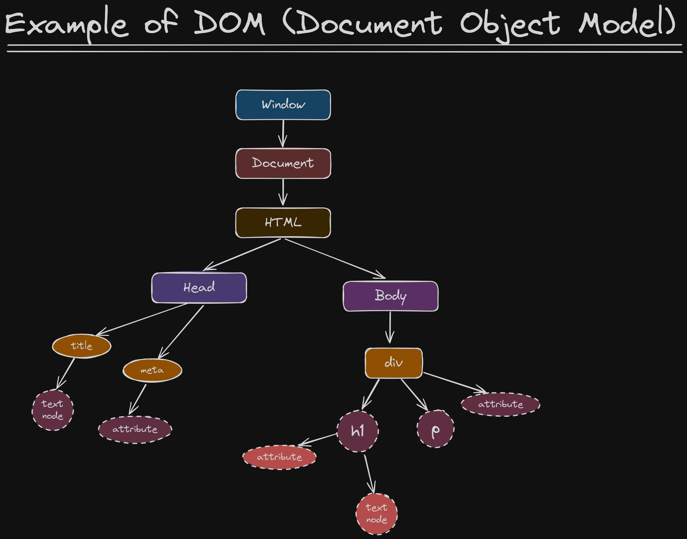

DOM
The Document Object Model (DOM) is an application programming interface (API) for manipulating HTML and XML
documents. (add, remove and modify parts of the document/HTML)
When a web page is loaded the browser creates a Document Object Model of the page
Note:- In this DOM tree, the document is the root node or object

With the object model, Javascript gets all the power it needs to create dynamic HTML
- Javascript can change all the HTML elements in the page
- Javascript can change all the HTML attributes in the page
- Javascript can change all the CSS styles in the page
- Javascript can remove existing HTML elements and attributes
- Javascript can add new HTML elements and attributes/li>
- Javascript can react to all existing HTML events in the page
- Javascript can create new HTML events in the page
NOTE:-
- In DOM all HTML elements are defined as objects. so it will have both property and method
- The document object represent your web page.
- If you want to access any element in an HTML page, you always start with accessing the document object.